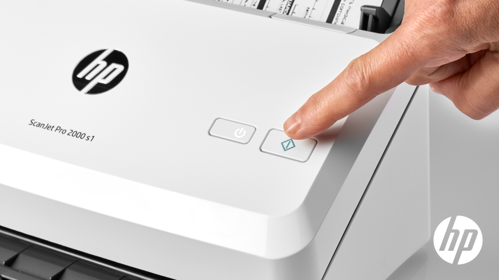
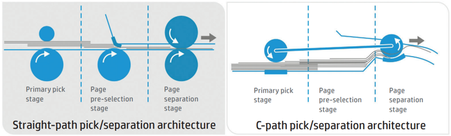
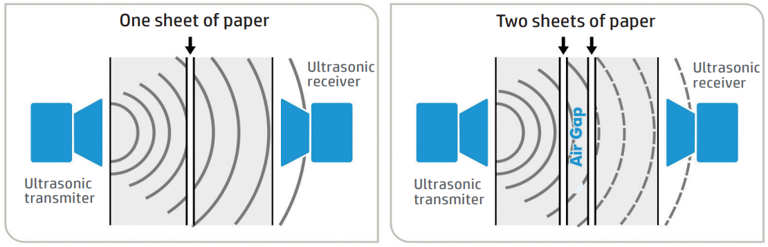

HP ScanJet Solution
โซลูชันสแกนเอกสารที่ตอบโจทย์ทุกรูปแบบการใช้งาน ความเร็วสูง ความแม่นยำ และซอฟต์แวร์อัจฉริยะ ที่ช่วยเปลี่ยนกองเอกสารให้เป็นไฟล์ดิจิทัลที่พร้อมใช้งานทันที รองรับตั้งแต่ออฟฟิศขนาดเล็กไปจนถึงองค์กรระดับ Enterprise

HP ScanJet Series — โซลูชันสแกนเอกสารครบวงจร สำหรับทุกขนาดธุรกิจ
HP ScanJet ครอบคลุมทุกความต้องการ ตั้งแต่รุ่นขนาด A4 สำหรับเอกสารสำนักงานทั่วไป เช่น ใบเสร็จ สัญญา หรือรายงาน ไปจนถึงรุ่นขนาดใหญ่ A3 ที่รองรับเอกสารสำคัญและงานเฉพาะทาง เช่น แบบแปลน หรือโฉนดที่ดิน เพื่อให้ทุกองค์กรได้เลือกใช้งานรุ่นที่ตอบโจทย์และคุ้มค่าที่สุด
HP ScanJet Enterprise Flow 9000 s1 — เครื่องสแกน A3 รุ่นท็อป
ด้วยความเร็วในการสแกนตั้งแต่ 25 ไปจนถึง 120 หน้าต่อนาที (ppm) รองรับการใช้งานอย่างต่อเนื่องสูงสุด 20,000 แผ่นต่อวัน
นอกจากจะสแกนเอกสารทั่วไปได้แล้ว HP ScanJet มีรุ่นที่ถูกออกแบบมาเพื่อรองรับการสแกนบัตรและพาสปอร์ตโดยเฉพาะ ด้วยช่องสแกนด้านหน้าที่เข้าถึงง่าย พร้อมฟีเจอร์ดึงข้อมูลจากพาสปอร์ตอัตโนมัติ เหมาะสำหรับธุรกิจที่ต้องยืนยันตัวตนลูกค้าเป็นประจำ เช่น เคาเตอร์เช็คอิน ในโรงแรมและสนามบิน
HP ScanJet Pro 4200 s1 — สแกนบัตรและพาสปอร์ตได้แม่นยำในทุกครั้ง
ไฟล์ที่สแกนออกมาไม่ใช่แค่รูปภาพ แต่คือเอกสารดิจิทัลที่พร้อมค้นหาและจัดเก็บได้ทันที ด้วยซอฟต์แวร์ HP Scan ที่มาพร้อมเครื่องสแกน
HP Scan อ่าน OCR แล้วตั้งชื่อไฟล์อัตโนมัติจากเลขที่ใบแจ้งหนี้ในเอกสาร
ป้องกันปัญหากระดาษดึงซ้อนกัน (Multi-feed) ด้วยระบบตรวจจับคลื่นอัลตราโซนิก หากพบกระดาษติดกัน เครื่องจะหยุดและแจ้งเตือนทันที

การป้อนกระดาษจะผ่านขั้นตอนการแยกเอกสารถึง 3 ระดับ ลดปัญหาการดึงกระดาษซ้อนได้อย่างมีประสิทธิภาพ

เซนเซอร์อัลตราโซนิกตรวจจับได้ทันทีเมื่อมีกระดาษซ้อนกันมากกว่า 1 แผ่น